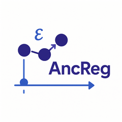

P-values for summary graph
summary_p.val.RdCollect p-values for summary graph.
Examples
# random DAGS for simulation
set.seed(1234)
p <- 5 #number of nodes
DAG <- pcalg::randomDAG(p, prob = 0.5)
B <- matrix(0, p, p) # represent DAG as matrix
for (i in 2:p){
for(j in 1:(i-1)){
# store edge weights
B[i,j] <- max(0, DAG@edgeData@data[[paste(j,"|",i, sep="")]]$weight)
}
}
colnames(B) <- rownames(B) <- LETTERS[1:p]
# solution in terms of noise
Bprime <- MASS::ginv(diag(p) - B)
n <- 500
N <- matrix(rexp(n * p), ncol = p)
X <- t(Bprime %*% t(N))
colnames(X) <- LETTERS[1:p]
# fit ancestor regression
fit <- AncReg(X)
# collect summary p-values
summary_p.val(fit)
#> A B C D E
#> A 1.0000000 0.355083093 0.0493693 0.5107251 0.9777551
#> B 0.6612617 1.000000000 0.5350391 0.1672114 0.5645382
#> C 0.3190314 0.224148437 1.0000000 0.9467940 0.9968308
#> D 0.8740048 0.006213275 0.3530013 1.0000000 0.2938822
#> E 0.4328651 0.798593250 0.4182837 0.1692897 1.0000000